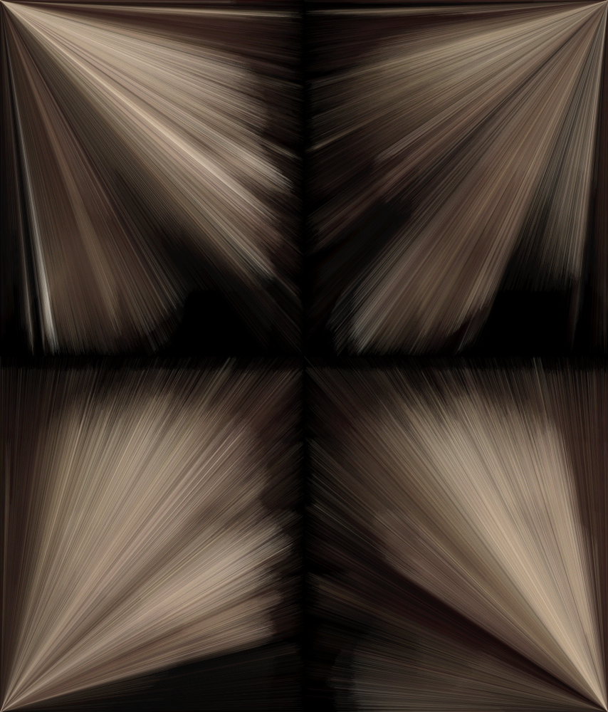
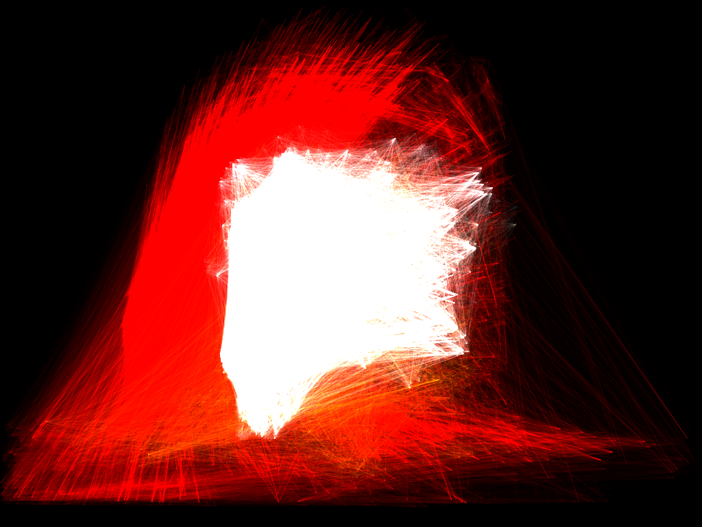
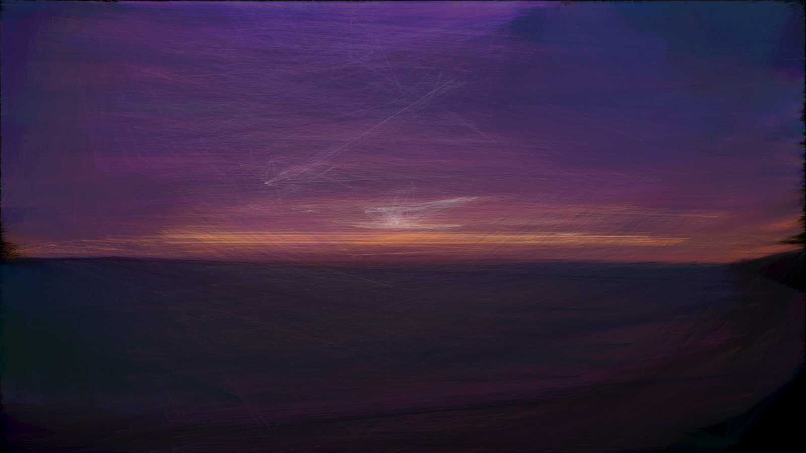

This has been my favourite experiment to date. In this I am playing with drawing lines from individual pixels to another point. Below are some of the more interesting variations.

Quad Portrait. The source photo is that of a girl with a shaven head in profile in front of a brick wall. The image above is a still from the end of the process that can take around half an hour to form. A pixel is chosen from the source photo and a translucent line of that colour is drawn to the corner, this is done 4 times, one for each corner forming 4 separate images. The pixel being selected meanders around the photo leaving a trail of lines and eventually exposing the image. I really like how it defines different parts of the image in each quarter of the final piece, a ghostly face appearing from a bundle of straight lines.


Explosion (top). Purple Landscape (bottom). These pieces were made by analysing a photo by choosing a pixel at random then finding up to 100 other pixels in the source image with the exact same colour. It then connects the 100 pixels to the first one with a line of the common colour. The idea was to create connections between regions of the pictures and ultimately an interesting abstraction of the source photo.